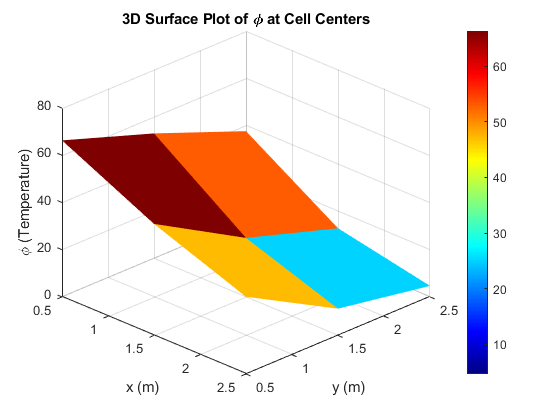

Contents
clear; clc; close all;
Gauss sidel method
Domain size
Lx = 3; % Length in x-direction (m) Ly = 3; % Length in y-direction (m)
Grid parameters
Nx = 3; % Number of control volumes in x-direction Ny = 3; % Number of control volumes in y-direction dx = Lx / Nx; dy = Ly / Ny;
Initial Boundary Phi Values
Phi_Left = 100; Phi_Right = 0; Phi_Top = 0; Phi_Bottom = 100;
Given Data
rouh = 1; % Densityu of the fluid Gamma = 1; a = 10; b = 2; u = 1; % Velocity of the fluid along X axis v = 1; % Velocity of the fluid along Y axis
convection Diffusion Coeff
% F_e = rouh*u*dy; F_w = rouh*u*dy; % F_n = rouh*v*dx; F_s = rouh*v*dx; F_e = rouh; F_w = rouh; F_n = rouh; F_s = rouh; D = Gamma/dx; %D_e = D_w = D_n = D_s; D_e = D; D_w = D; D_n = D; D_s = D;
Finite Volume Coefficients
aE = D_e;
aW = D_w + F_w;
aN = D_n ;
aS = D_s + F_s;
S_P = b*dx*dy;
S_u = a*dx*dy;
% Modify coefficients near boundaries
aE_b = 2 * D_e ;
aW_b = 2 * D_w + F_w ;
aN_b = 2 * D_n ;
aS_b = 2 * D_s + F_s;
Initialize temperature field
phi = zeros(Ny+2, Nx+2); % Apply Dirichlet Boundary Conditions phi(:, 1) = Phi_Left; % Left boundary (x = 0) phi(:, end) = Phi_Right; % Right boundary (x = Lx) phi(1, :) = Phi_Top; % Top boundary (y = Ly) phi(end, :) = Phi_Bottom; % Bottom boundary (y = 0) fprintf('The Initial Matrix With all Boundaries(Top Left Right Bottom Left \n') disp(phi)
The Initial Matrix With all Boundaries(Top Left Right Bottom Left
0 0 0 0 0
100 0 0 0 0
100 0 0 0 0
100 0 0 0 0
100 100 100 100 100
Iterative solver (Gauss-Seidel)
tol = 1e-6; error = 1; iter = 0; while error > tol phi_old = phi; % Update interior points for i = 2:Nx+1 for j = 2:Ny+1
if i == 2 % Near left boundary % fprintf('left boundary - %d,%d\n',j,i) aW_eff = aW_b; else aW_eff = aW; end
if i == Nx+1 % Near right boundary % fprintf(' right boundary - %d,%d\n',j,i) aE_eff = aE_b; else aE_eff = aE; end
if j == 2 % Near Top boundary % fprintf(' Top boundary - %d,%d\n',j,i) aS_eff = aS_b; else aS_eff = aS; end
if j == Ny+1 % Near Bottom boundary % fprintf(' Bottom boundary - (%d,%d)\n',j,i) aN_eff = aN_b; else aN_eff = aN; end
Compute new temperature using FVM equation
aP = aW_eff + aE_eff + aN_eff + aS_eff + S_P;
phi(j, i) = (aE_eff * phi(j, i+1) + aW_eff * phi(j, i-1) + ...
aN_eff * phi(j+1, i) + aS_eff * phi(j-1, i) + S_u) / aP;
end end % Compute error error = max(max(abs(phi - phi_old))); iter = iter + 1; end
fprintf('The Final T Matrix Temp at respective nodes internal + nearer boundary\n') disp(phi(2:end-1, 2:end-1)) disp('&'); disp(phi) disp(['Converged in ', num2str(iter), ' iterations with error ', num2str(error)]); % Till here function is fine function call has to writen the T as Phi , % please use phi insted of T % disp('flipud(T)') % disp(flipud(T)) % Plot solution figure; contourf(flipud(phi), 12, 'LineColor', 'none'); colorbar; %clim([200 500]); % Fix color range colormap(jet); % Match Python's color map title('2D Heat Conduction - Finite Volume Method 2D Upwind.DS'); xlabel('x (m)'); ylabel('y (m)');
The Final T Matrix Temp at respective nodes internal + nearer boundary
37.5698 12.7584 4.6860
52.9393 25.0000 11.3437
66.3140 47.2610 32.7209
&
0 0 0 0 0
100.0000 37.5698 12.7584 4.6860 0
100.0000 52.9393 25.0000 11.3437 0
100.0000 66.3140 47.2610 32.7209 0
100.0000 100.0000 100.0000 100.0000 100.0000
Converged in 13 iterations with error 2.3484e-07
Wall Labels
annotation('textbox',... [0.429385416666667 0.973101265822784 0.134416666666666 0.0263713080168778],... 'String', {sprintf('\\phi_{Top} = %g', Phi_Top)},... 'FitBoxToText','off',... 'EdgeColor','none',... 'FontSize', 12, ... 'FontWeight', 'bold'); annotation('textbox',... [0.0114166666666666 0.48655063291139 0.0630625 0.06856540084388],... 'String', {sprintf('\\phi_{Left} = %g', Phi_Left)},... 'FitBoxToText','off',... 'EdgeColor','none',... 'FontSize', 12, ... 'FontWeight', 'bold'); annotation('textbox',... [0.438020833333333 0.00843881856540084 0.14375 0.0358649789029536],... 'String', {sprintf('\\phi_{Bottom} = %g', Phi_Bottom)},... 'FitBoxToText','off',... 'EdgeColor','none',... 'FontSize', 12, ... 'FontWeight', 'bold'); annotation('textbox',... [0.909765625 0.518459915611814 0.0749999999999998 0.0527426160337549],... 'String', {sprintf('\\phi_{Right} = %g', Phi_Right)},... 'FitBoxToText','off',... 'EdgeColor','none',... 'FontSize', 12, ... 'FontWeight', 'bold');
Define cell-centered coordinates
Px = 1:Nx; Py = 1:Ny; xP = (Px - 0.5) * dx; yP = (Py - 0.5) * dy; [Xp, Yp] = meshgrid(xP, yP); % Extract internal phi values (removing ghost cells) phi_internal = phi(2:end-1, 2:end-1); % 3D Surface Plot figure; surf(Xp, Yp, flipud(phi_internal), 'EdgeColor', 'none'); colorbar; colormap(jet); title('3D Surface Plot of \phi at Cell Centers'); xlabel('x (m)'); ylabel('y (m)'); zlabel('\phi (Temperature)'); view(45, 30); % nice viewing angle